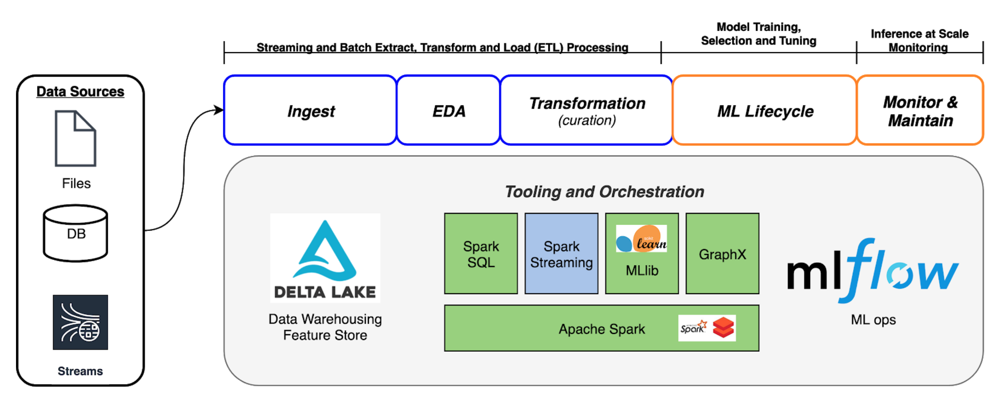

Data Intensive Applications - Introduction
Data Intensive Applications: Definition and Purpose
In the lecture, you’re introduced to the concept of data-intensive applications. These applications are designed to either augment or replace human capacity in various tasks. The essence of these applications lies in their ability to optimize specific outcomes, either by increasing or decreasing certain metrics.
To better understand the purpose and scope of data-intensive applications, consider the following matrix:
Augmentation vs. Replacement: Data-intensive applications can be categorized based on whether they augment human capabilities or replace them entirely. Augmentation refers to enhancing human abilities, while replacement implies taking over tasks traditionally performed by humans.
More vs. Less: Another way to categorize these applications is based on their optimization goals. Are they designed to increase a certain metric or decrease it? For instance, an application might aim to increase safety or reduce costs.
Real-world Examples:
Self-driving Cars: These vehicles are designed to replace human drivers. The primary goals are to increase safety (by reducing human errors) and decrease congestion (by optimizing routes and reducing unnecessary driving, such as searching for parking).
Medical Image Analysis: In the medical field, data-intensive applications can augment doctors’ abilities. For instance, image analysis tools can help dermatologists identify and diagnose skin lesions more accurately.
Transportation Route Planning: In the logistics and transportation sector, data-intensive applications can help in route planning. By optimizing routes, these applications can reduce fuel consumption and costs.
Remember, the key to understanding data-intensive applications is to identify their purpose and the specific optimizations they aim to achieve. Whether it’s augmenting human abilities or replacing them, these applications are reshaping various industries and improving outcomes.
The Four V’s of Big Data and Compute Infrastructure
In this section, you delve deeper into the foundational aspects of data-intensive applications, focusing on the characteristics of big data and the infrastructure that supports it.
The Four V’s of Big Data:
Volume: Refers to the sheer amount of data being processed. As data-intensive applications handle vast amounts of information, understanding the scale becomes crucial.
Variety: Highlights the different types of data sources and formats that applications might encounter. This could range from structured data in databases to unstructured data like images or videos.
Velocity: Emphasizes the speed at which data is generated, processed, and made available. In real-time applications, the rate of data inflow and outflow can be staggering.
Veracity: Points to the quality and trustworthiness of the data. Given that data comes from various sources, ensuring its accuracy and reliability is paramount.
Compute Infrastructure:
The lecture provides a visual tour of Google’s data centers, showcasing the massive scale of infrastructure required to support data-intensive applications. Here’s what you should note:
Networking Room: This is where data requests are routed to the appropriate servers. It’s also the hub that allows data centers to communicate with each other globally.
Server Floor: Houses powerful computers that handle a myriad of tasks, from processing search queries to hosting videos. Google has custom-designed these servers for compactness and energy efficiency.
Data Redundancy: To ensure data availability and safety, each piece of data is stored on at least two servers. Critical data is also backed up on digital tapes.
Cooling Systems: Given the heat generated by these servers, cooling towers are employed to maintain optimal temperatures.
Real-world Example: Netflix on AWS
Netflix, a leading entertainment service, offers a prime example of a data-intensive application operating at an immense scale. Here’s a snapshot:
- Netflix serves approximately 86 million customers across 190 countries.
- They deliver about 150 million hours of streaming video daily.
- Everything runs out of Amazon Web Services (AWS), spread across three regions and 12 zones.
- At peak times, Netflix operates around 100,000 compute instances.
This example underscores the vast compute resources required to run data-intensive applications and deliver seamless experiences to users worldwide.
Having explored the foundational aspects of big data and the infrastructure that supports it, you’re better equipped to appreciate the complexities and capabilities of data-intensive applications.
Data-Intensive Applications in Real-World Scenarios
In this section, you’re introduced to various real-world examples that demonstrate the power and impact of data-intensive applications. These examples provide a tangible understanding of how these applications are shaping industries, influencing decisions, and optimizing outcomes.
Spotify Wrapped:
Spotify, a popular music streaming service, offers a feature called “Wrapped” to its users. This feature provides a detailed review of a user’s listening habits over the year. It’s a nostalgic look back, showcasing top artists, genres, songs, and more. To generate this personalized review for millions of users, Spotify relies on a data-intensive application that processes vast amounts of user data. The sheer scale of this operation is a testament to the capabilities of data-intensive applications.
UPS Route Optimization:
UPS, a global logistics company, has developed a system called ORION (On-Road Integrated Optimization and Navigation). This system optimizes delivery routes for UPS drivers, leading to significant savings. By augmenting their operations with data-intensive applications, UPS has managed to save hundreds of millions of dollars annually. The application aims to use less (in terms of fuel, time, and resources) while augmenting the efficiency of delivery operations.
Netflix Recommendation Engine:
Netflix’s recommendation engine is a crucial component of its service. This engine suggests content to users based on their viewing habits, preferences, and other factors. As highlighted in the lecture, nearly 80% of the content viewed on Netflix is driven by these recommendations. This data-intensive application augments the user experience by presenting tailored content suggestions, leading to increased engagement and reduced churn.
COVID-19 Spread Modeling at Stanford:
Researchers at Stanford developed a data-intensive application to model the spread of COVID-19. This application uses mobility data to simulate infection spread patterns. The primary insight was to utilize anonymized large-scale data from cell phones to understand mobility and contact patterns among individuals. The model covers ten of the largest metropolitan areas in the US, representing 98 million people. Policymakers can use this application to visualize the potential impact of reopening different sectors of the economy or regions, aiding in informed decision-making during the pandemic.
The video provides a brief overview of this research and its implications. By leveraging data-intensive applications, policymakers can make more informed decisions, balancing economic needs with public health concerns.
These real-world examples underscore the transformative potential of data-intensive applications. Whether it’s enhancing user experiences, optimizing operations, or aiding in critical decision-making, these applications are at the forefront of technological innovation.
Data-Driven Policy Making: COVID-19 Spread Simulation
In this section, you’re introduced to a groundbreaking application developed by researchers at Stanford that uses data-intensive modeling to simulate the spread of COVID-19 based on various policy decisions.
Mobility Data and Infection Spread:
The researchers utilized anonymized large-scale data from cell phones to understand mobility patterns and contact patterns among individuals. This data provides insights into how people from different neighborhoods visit various points of interest, such as parks, grocery stores, schools, churches, etc. The duration of their stay and the area of these locations allow the researchers to compute the density of people in any given location at any given time.
Key Findings:
High-Risk Locations: The model revealed that just 10% of points of interest could account for over 80% of the infections in a city. Locations where infections are most likely to occur are places where people are densely packed for extended periods, such as restaurants, coffee shops, and fitness centers.
Density Caps and Economic Impact: Implementing density caps, where the occupancy of a location is capped at a percentage of its maximum, can significantly reduce infections. For instance, capping visits at 50% of maximum occupancy can reduce overall infections by over 50% while only causing a 5-10% reduction in visits to points of interest.
Addressing Disparities: The research highlighted that low-income groups are more likely to visit places with higher densities. For example, grocery stores in low-income neighborhoods tend to be more crowded. Implementing density caps can help reduce disparities and ensure safer environments for all.
Real-World Application:
The data-intensive application developed provides policymakers with a simulation tool that visualizes the potential impact of reopening different sectors or regions. By adjusting various parameters, policymakers can see the projected number of COVID-19 cases over time based on their decisions. This tool aids in balancing the economic needs with public health concerns, allowing for informed decision-making.
The underlying model for this application was built on vast amounts of mobility data, and the simulation tool serves as an augmentation for policymakers, offering predictive insights into the consequences of their decisions.
Having explored this innovative application that combines data science with public health policy, you gain a deeper appreciation for the transformative potential of data-intensive applications in addressing real-world challenges.
Fuel Optimization in Trucking: Vnomics True Fuel Network
In this section, you’re introduced to the challenges and opportunities associated with fuel optimization in the trucking industry. The lecture emphasizes the significance of fuel consumption in trucking operations and how data-intensive applications can play a pivotal role in optimizing fuel usage.
The Scale of the Trucking Industry:
- The trucking industry in the United States spends approximately $150 to $160 billion annually on diesel fuel.
- On average, a truck consumes about $50,000 worth of diesel every year.
- There’s roughly one truck for every 100 people in the U.S., translating to millions of trucks on the road.
- Almost everything around us, from the food we eat to the products we buy, has been transported by these trucks at some point.
The Optimization Opportunity:
Given the vast amount of fuel consumed by the trucking industry, there’s a significant opportunity for optimization. The goal is to use less fuel, which not only has economic benefits but also contributes to sustainability and reduces environmental impact.
Vnomics True Fuel Network:
Vnomics, a tech company, has developed a product called the True Fuel Network. This data-intensive application aims to optimize fuel consumption in trucking operations. The product processes millions of trips, providing insights into fuel consumption patterns and offering actionable recommendations.
Key Features:
Driver Behavior Analysis: Driver behavior can influence fuel efficiency by up to 30%. The True Fuel Network provides real-time in-cab coaching, offering audible tones when drivers exhibit inefficient behaviors. This immediate feedback helps drivers adjust their driving habits to optimize fuel consumption.
Trip Context Analysis: Factors such as the load carried, the type of truck, routing, and environmental conditions (like weather and terrain) play a crucial role in fuel consumption. The True Fuel Network analyzes all these factors to provide comprehensive insights.
Visual Data Representation: The lecture showcases a visual representation of the trips processed by the True Fuel Network. This visualization highlights trucking routes, urban hubs, and key trucking centers across the country.
Automated Reporting: The system offers automated reporting features, sending weekly reports to driver trainers and management. These reports provide insights into fleet performance, highlighting areas for improvement and coaching opportunities.
Real-World Application:
The lecture showcases a video that further elaborates on the features and benefits of the True Fuel Network. The video emphasizes the importance of real-time coaching, driver feedback mechanisms, and the potential savings that can be achieved through optimized fuel consumption.
In essence, the Vnomics True Fuel Network serves as a testament to the transformative potential of data-intensive applications in the trucking industry. By leveraging data and technology, the industry can achieve significant savings, reduce its environmental footprint, and enhance operational efficiency.
Designing Data-Intensive Applications: The Drivetrain Approach
In this section, you’re introduced to a systematic approach to designing data-intensive applications, known as the Drivetrain Approach. This methodology emphasizes the importance of starting with a clear objective and then leveraging data and models to achieve that goal.
The Four Steps of the Drivetrain Approach:
Objective Definition: Begin by clearly defining the goal of your application. This is the foundation upon which everything else is built. You need to understand whether you’re aiming to augment human capacity or replace it. Additionally, determine the basis of the optimization: are you aiming for more or less of a particular metric?
Leverage Data: Once the objective is clear, the next step is to identify the data that can help achieve this goal. This is where you determine what kind of data is relevant and how it can be used to influence the desired outcome.
Model Development: With the relevant data in hand, you can now develop models that simulate various scenarios. These models allow for exploration and “what-if” analyses, enabling you to predict potential outcomes based on different inputs.
Outcome Optimization: After simulating various scenarios, you analyze the outputs to determine the best course of action. This step involves fine-tuning and iterating on the model to optimize the desired outcome.
Real-World Application: COVID Predictions
The lecture revisits the COVID-19 spread simulation developed by Stanford researchers. This application serves as a practical example of the Drivetrain Approach:
Objective: The goal was to predict the spread of COVID-19 based on different policy decisions, balancing economic needs with public health concerns.
Leverage Data: Researchers utilized anonymized large-scale mobility data from cell phones to understand how people move and interact.
Model Development: Using the mobility data, a model was developed to simulate the spread of the virus based on various factors, such as opening or closing certain points of interest.
Outcome Optimization: Policymakers can use the simulation tool to visualize the potential impact of their decisions, allowing them to make informed choices that optimize public health outcomes.
Jeremy Howard and the Drivetrain Metaphor:
Jeremy Howard, a notable figure in the data science community, is highlighted for his contributions to this approach. With a rich background, including being a Kaggle Grand Master and co-founding Fast.ai, Howard has successfully applied the Drivetrain Approach in various ventures, from insurance pricing optimization to medical analytics based on genomic information.
In essence, the Drivetrain Approach offers a structured methodology to design and implement data-intensive applications. By starting with a clear objective and systematically leveraging data and models, you can optimize outcomes and achieve tangible results.
Simulation, Optimization, and Validation in Data-Intensive Applications
In this section, you’re taken through the intricacies of simulation, optimization, and the importance of validation in data-intensive applications. The lecture emphasizes the need to go beyond just modeling and to actively simulate and optimize outcomes for actionable insights.
Simulation and Real-Time Feedback:
The lecture delves into the True Fuel application, which provides real-time feedback to drivers based on their driving behavior. The application doesn’t just rely on a static model; instead, it actively simulates optimal driving behavior in real-time and compares it to the actual behavior of the driver.
Real-Time Modeling: As the driver operates the vehicle, the application continuously models the optimal operation of the vehicle.
Audible Feedback: If the driver’s behavior deviates significantly from the optimal operation, the application provides audible feedback, much like a rumble strip on a road. This immediate feedback helps drivers adjust their behavior to optimize fuel consumption.
The Importance of What-If Analysis:
A critical aspect of data-intensive applications is the ability to perform “what-if” analyses. This involves simulating various scenarios to understand potential outcomes. It’s not just about predicting what did happen but more about predicting what could happen under different circumstances.
Counterfactual Simulation: The goal is to simulate outcomes based on different inputs or conditions. For instance, in the context of the COVID-19 spread simulation, it’s about predicting the spread based on different policy decisions.
Optimization: After simulating various scenarios, the next step is to analyze the results and determine the best course of action. This involves identifying the optimal outcomes based on the desired objectives.
Validation in Machine Learning:
Towards the end of this section, there’s a discussion about the validation process in machine learning. Validation is crucial to ensure that the models developed are accurate and reliable.
Testing Data: Typically, when building a machine learning model, a portion of the data is set aside for testing. This data is used to evaluate the performance of the model and ensure it’s making accurate predictions.
Classifier Validation: The lecture touches upon the concept of classifier validation, emphasizing the need to rigorously test and validate machine learning classifiers to ensure they’re making accurate classifications.
The lecture concludes with a Q&A session where students raise questions about the validation process and its importance in data-intensive application development.
Understanding simulation, optimization, and validation is crucial when designing data-intensive applications. These processes ensure that the applications not only make accurate predictions but also provide actionable insights that can drive decision-making.
Challenges and Considerations in Data-Intensive Applications
In this section, you’re introduced to the complexities and challenges associated with building and maintaining data-intensive applications. The lecture emphasizes the dynamic nature of these applications and the need for continuous monitoring and updating.
Probabilistic Nature:
Data-intensive applications are inherently probabilistic, not deterministic. This means that while they can make predictions or recommendations based on data, there’s always an element of uncertainty. It’s crucial to understand and account for this uncertainty when designing and using these applications.
Continuous Updating:
One of the significant challenges with data-intensive applications is the need for continuous updating. As new data becomes available or as the environment changes, the models underpinning these applications might become outdated or less accurate.
Dynamic Data Environment: The data feeding into these applications can change over time. For instance, user behaviors might evolve, or new types of data might become available. This dynamic nature requires the models to be adaptable.
Model Drift: Over time, a model that was once accurate might start to drift from reality. This drift can be due to various factors, including changes in the data distribution or external factors affecting the system.
The Autonomous Vehicle Example:
The lecture revisits the example of autonomous vehicles to highlight the challenges in building data-intensive applications.
Multiple Models: An autonomous vehicle doesn’t rely on just one model. Instead, it uses an ensemble of models to handle different tasks, from navigation to object detection.
Simulation and Testing: Before deploying these models in real-world scenarios, they undergo rigorous simulation and testing. This process helps identify potential issues and optimize the models for better performance.
Optimization Challenges: With so many models working in tandem, optimization becomes a complex task. The goal is to ensure that all models work harmoniously to drive the vehicle safely and efficiently.
Emphasis on Continuous Monitoring:
Given the challenges and the dynamic nature of data-intensive applications, there’s a strong emphasis on continuous monitoring. Regularly monitoring the performance of these applications can help identify issues early on and ensure that they continue to deliver accurate and reliable results.
In essence, building and maintaining data-intensive applications is a continuous process. It requires a deep understanding of the data, the models, and the environment in which these applications operate. Regular updates, monitoring, and optimization are crucial to ensure their long-term success and reliability.
Data-Intensive Applications: A Team Sport
In this section, you’re introduced to the collaborative nature of building data-intensive applications. The lecture emphasizes that creating these applications is not a solo endeavor but rather a team sport, requiring collaboration across various roles and skill sets.
Roles in Building Data-Intensive Applications:
Data Scientists: Trained in the art and science of extracting insights from data, data scientists bring a strong background in modeling, analysis, and interpretation. They are equipped with the tools and techniques to dive deep into data and derive meaningful patterns.
Data Analysts: These professionals focus more on mining data, programming for visualization, and communicating findings. They are adept at quickly assessing data quality and generating hypotheses based on initial explorations. Data analysts often serve as the bridge between raw data and actionable insights, providing the initial spark of inspiration.
Other Roles: While the lecture primarily highlights data scientists and data analysts, it’s implied that there are other roles involved, such as data engineers, business analysts, and domain experts. Each role brings a unique perspective and set of skills to the table.
Key Considerations:
Understanding Role Requirements: As you embark on a career in the commercial sector, it’s crucial to understand the specific requirements of roles labeled as “data scientist.” Some companies might use the term “data scientist” when they are actually looking for a data analyst. It’s essential to clarify role expectations and responsibilities during the hiring process.
Collaboration is Key: Building data-intensive applications requires collaboration across various roles. Each role complements the others, ensuring that the application is robust, accurate, and delivers value. Data scientists might focus on modeling, while data analysts might emphasize data quality and initial insights. Together, they ensure the application’s success.
Ethics and Regulations: As data-intensive applications become more prevalent, there’s a growing emphasis on ethics and regulations. Ensuring transparency in modeling and optimization processes is becoming increasingly important. As a professional in this field, you’ll need to be aware of ethical considerations and potential regulatory requirements.
In essence, building data-intensive applications is a collaborative endeavor. It requires a harmonious blend of skills, expertise, and perspectives. As you navigate the world of data science and application development, remember that it’s a team sport, and collaboration is at its heart.
Building Data-Intensive Applications: A Hierarchical Approach
In this section, you’re introduced to a hierarchical approach to building data-intensive applications. This pyramid model provides a structured way to think about the various stages and activities involved in developing these applications.
The Pyramid Model:
The pyramid is composed of different layers, each representing a specific set of activities. As you work your way from the bottom to the top of the pyramid, the activities become more refined and specific.
Foundation: At the base of the pyramid, you have foundational activities. These are the initial steps that set the stage for the entire application development process. It involves understanding the business context, defining objectives, and gathering relevant data.
Data Preparation: As you move up the pyramid, the next layer focuses on data preparation. This involves cleaning the data, handling missing values, and transforming the data into a format suitable for modeling.
Modeling: The middle layer of the pyramid is dedicated to modeling. Here, you leverage various algorithms and techniques to develop models that can make predictions or provide insights based on the data.
Evaluation: Once the models are developed, the next step is evaluation. This layer emphasizes the importance of rigorously testing and validating the models to ensure they are accurate and reliable.
Deployment: At the top of the pyramid, you have deployment. This is where the models are integrated into real-world applications and systems, making them accessible to end-users.
Team Collaboration:
As you navigate through the pyramid, it’s essential to remember the collaborative nature of building data-intensive applications. Different roles, such as data scientists, data analysts, and data engineers, come into play at various stages of the pyramid.
Role Dynamics: While data scientists might be heavily involved in the modeling layer, data engineers play a crucial role in the foundational and data preparation layers. Understanding these dynamics is vital for effective collaboration.
Iterative Process: The pyramid model also emphasizes the iterative nature of building data-intensive applications. Often, you might need to loop back to previous layers to refine the data or models based on new insights or changes in the business context.
In essence, the pyramid model offers a structured and systematic approach to building data-intensive applications. By understanding the various layers and activities, you can ensure a more streamlined and effective development process.
Setting Up for Success in Data-Intensive Applications
In this section, you’re introduced to the foundational principles and considerations that set the stage for successful data-intensive application development. The lecture emphasizes the importance of understanding the business context, ensuring the relevance of the application’s outputs, and the role of early data exploration.
Understanding the Business Context:
Leadership’s Role: It’s crucial for the person or team leading a data-intensive application project to have a deep understanding of the business. This ensures that the application aligns with the business’s objectives and can deliver actionable insights that fit within the broader business context.
Avoiding Misalignment: The outputs of a data-intensive application should be relevant and actionable. It’s essential to avoid confusing the end goal with the means to achieve it. For instance, while a data science team might focus on metrics like accuracy or loss factors, these might not always be directly relevant to business stakeholders. The application’s outputs should be tailored to the audience and the business’s needs.
Early Data Exploration:
Dive into Raw Data: Before committing to a specific approach or model, it’s beneficial to delve into the raw data. This exploration can provide insights into potential directions for the application.
Role of Data Analysts: Data analysts can play a pivotal role in this early exploration phase. By slicing, dicing, and visualizing the data, they can uncover patterns and insights that can guide the application’s development.
Finding Inspiration: The initial exploration phase is about finding inspiration in the data. It’s about ensuring that the data supports the objectives of the application and that there’s a clear direction to pursue.
Ensuring Relevance and Actionability:
Tailored Outputs: The outputs of a data-intensive application should be tailored to the audience. Whether it’s business stakeholders, end-users, or other teams, the information presented should be relevant, understandable, and actionable.
Iterative Process: Building a data-intensive application is an iterative process. It’s essential to continuously refine the application based on feedback, new data, and changing business needs.
The lecture references Cassie Kozyrkov, the Head of Decision Science at Google, who emphasizes the importance of setting up for success in data-intensive application development. Her insights underscore the need for a deep understanding of the business, early data exploration, and ensuring the relevance of the application’s outputs.
In essence, setting up for success in data-intensive applications requires a combination of business understanding, data exploration, and continuous refinement. By keeping these principles in mind, you can ensure that the application delivers value and aligns with the broader business objectives.
Prerequisites for Data-Intensive Applications
In this section, you’re introduced to the prerequisites and foundational considerations that need to be addressed before diving into the development of data-intensive applications. The lecture emphasizes the importance of having a clear understanding of the business context, ensuring the availability of relevant data, and assembling the right team with the necessary skill sets.
Key Considerations:
Traditional Software vs. ML/AI Approach: Before embarking on a data-intensive application project, it’s essential to evaluate whether a traditional software approach might suffice or if a more complex ML or AI-based modeling approach is necessary. Sometimes, simple heuristic methods (like “if-then-else” logic) can achieve the desired results without the overhead of a data-intensive application.
User Experience (UX): Beyond just producing actionable results, it’s crucial to ensure that these results are presented in a user-friendly manner. This involves considering how the outputs will be displayed, ensuring they are easily understandable, and making them accessible when needed.
Ethical Development: As data-intensive applications become more prevalent, there’s an increasing emphasis on ethical considerations. It’s essential to ensure that the applications are developed with transparency and that their recommendations or actions align with ethical standards.
Setting Reasonable Expectations: Define what constitutes success for the application. Understand the potential impact of occasional mistakes. For instance, while an error in a movie recommendation system might be inconsequential, a mistake in a self-driving car system could be catastrophic.
Resource Availability: Consider the availability of cloud resources or other computational capacities. Some applications, like streaming services, require massive computational power, which might only be feasible with cloud resources.
Data Availability: Data is the backbone of these applications. Ensure that there’s enough relevant data available to train and refine the models. Without sufficient data, the application might not perform optimally.
Team Composition: Building data-intensive applications requires a diverse set of skills. It’s essential to have a team that encompasses all the necessary expertise, from data science to software development and domain knowledge.
Reflecting on the Prerequisites:
The lecture references the term “unicorn” to describe individuals who possess all the skills necessary to build a data-intensive application from scratch. Such individuals are rare, emphasizing the importance of collaborative efforts and team dynamics in the development process.
In essence, before diving into the development of a data-intensive application, it’s crucial to address these foundational considerations. By ensuring that the business context is clear, the necessary data and resources are available, and the right team is in place, you set the stage for a successful application development journey.
Key Takeaways and Concluding Remarks
In this concluding section, the lecture revisits the main points discussed throughout the presentation and emphasizes the importance of a structured approach to building data-intensive applications.
Recap:
Understanding Data-Intensive Applications: The lecture began by defining what a data-intensive application is, emphasizing its role in augmenting or replacing human capacity and its optimization potential.
Four Quadrant Metaphor: A metaphor was introduced to categorize data-intensive applications based on augmentation vs. replacement and optimization in terms of more vs. less. This framework provides a quick way to understand the primary function of an application.
Prerequisites for Success: Before diving into the development of a data-intensive application, several prerequisites were highlighted. These include understanding the business context, ensuring data availability, assembling the right team, and setting clear performance criteria.
Minimum Performance Criteria: One of the most emphasized points was the need to set a minimum performance criteria before starting the development process. This criteria serves as a benchmark to ensure that the application meets the desired standards. It’s crucial to be stringent about this criteria and be willing to halt the project if it’s not met.
Ethical Considerations: The lecture touched upon the growing importance of ethical considerations in data-intensive application development. Ensuring transparency, fairness, and ethical decision-making is paramount.
Interpretability and Metrics: The importance of model interpretability was highlighted, emphasizing the need to understand why a model makes certain decisions. Additionally, setting clear metrics for success and regularly reviewing them is crucial for the ongoing success of the application.
Concluding Remarks:
The lecture concludes with a call to action for aspiring data scientists and professionals in the field. Building data-intensive applications is a complex yet rewarding endeavor. It requires a combination of technical expertise, business acumen, and a collaborative spirit. By approaching the process with rigor, clarity, and a commitment to ethical considerations, you can develop applications that not only deliver value but also stand the test of time.
The provided links and resources throughout the lecture serve as additional tools for deepening your understanding and further exploration.
Introduction and Context for the Course
This visual is a picture that encapsulates the essence of what the course aims to teach. The goal for the evening is to transition from understanding what a data-intensive application is, which was the focus of the last lecture, to diving deep into how these applications are developed.

The challenges that arise during the development of these applications are highlighted. You’re made aware that the journey will not be straightforward. There are numerous activities and intricacies involved, and the lecture aims to shed light on these aspects. The speaker emphasizes the top line of the visual, which represents various activities associated with building data-intensive applications. These activities range from ingesting data from files, databases, and streams to preparing the data, building models, and deploying and monitoring those models at scale.
As you delve deeper into the lecture, you realize that the course will equip you with the knowledge of various platform pieces. These tools are not just for building the applications but also for navigating the challenges and pitfalls that might come your way.
Steps in Building Data-Intensive Applications
The narrative shifts to a more structured approach, outlining the steps involved in building data-intensive applications:
Setting Your Objective: This is a crucial first step. Before diving into the technicalities, you need to have a clear goal in mind. This step is about addressing various questions upfront, ensuring you have a clear direction before embarking on the journey.
Gathering Data: Once your objective is clear, the next step is to gather relevant data. This is the foundation upon which your application will be built.
Exploratory Data Analysis (EDA): With the data in hand, you embark on a journey of exploration. EDA allows you to develop insights and understand the nuances of the data you’ve gathered.
Data Curation and Feature Development: This step emphasizes the importance of data quality. You’re reminded of the term ‘veracity’ from the last lecture, which relates to the trustworthiness of data sources. Data curation ensures that you have control over the quality of your data. Alongside this, you also delve into feature development, an aspect you might already be familiar with.
Tooling and Configuration of Development: The lecture touches upon the tools and configurations essential for development. Interestingly, you learn that the machine learning component, which might seem central, often diminishes in importance in the broader context of these applications.
Model Training at Scale: While you might be familiar with model training, the lecture emphasizes doing it at scale and in a controlled manner. It’s about capturing details of the lifecycle, ensuring you don’t lose track of your progress.
Deployment and Maintenance: Once your application is ready, the final step is to deploy and maintain it. This ensures that your application remains relevant and functional in the real world.
Setting Your Objective
You’re reminded of the importance of starting with a clear objective in mind. Before diving into the technicalities of building a data-intensive application, it’s essential to understand the problem you’re trying to solve. Is it a customer’s problem? A business challenge? The lecture emphasizes the importance of optimization and ensuring that you have a clear metric aligned with your objective.
Building a data-intensive application isn’t a solo endeavor. It’s a team sport. Different individuals, each with their expertise, come together to achieve a common goal. At the forefront of setting the objective are the business leaders and domain experts. They ensure that the high-level decisions about the application align with the domain’s nuances and the business’s needs.
Gathering Your Data
As you move to the next step, the focus shifts to gathering data. The domain experts remain involved, ensuring that the data aligns with the application’s objective. However, data engineers now come into play. They are responsible for ingesting data at scale, directing it towards a ‘lake house’ (a unified platform that combines the capabilities of data lakes and data warehouses). The emphasis is on the veracity of the data – its quality, source, and relevance.
Data governance becomes a focal point. In an era where privacy and data protection are paramount, ensuring ethical treatment of data is crucial. The lecture underscores the importance of having control over where the data comes from and how it’s used.
Exploratory Data Analysis (EDA)
With the data in hand, the next step is EDA. Domain experts continue to be involved, ensuring that the data analysis aligns with the application’s objectives. Data analysts join the fray, visualizing the data and ensuring it provides the necessary leverage for the application.
The lecture introduces you to the science of data analysis and EDA. A resource from Google, focusing on the analysis of logs crucial for their search capabilities, is highlighted. This resource provides practical advice for analyzing large and complex datasets.
Data Curation
The narrative now shifts to data curation. Data engineers play a pivotal role in this step, focusing on creating what the lecture terms as a ‘silver dataset’. This dataset is one over which there’s significant control, setting the stage for effective trade-offs between bias and variance in the modeling lifecycle.
This curated dataset is not just for training models. Once a model is deployed, this dataset will also provide the features necessary for the model to generalize in real-time. The lecture emphasizes the dual role of this dataset – for historical data capture and runtime data capture during inference.
The data curation step also touches upon the importance of splitting the data for training and testing. Another resource is provided, offering deeper insights into this aspect.
Data Validation
In this section, the lecture emphasizes the significance of data validation in machine learning. The process is crucial at two different points in time: during the preparation for model training and during runtime when the model is in inference mode.
Pre-training Validation
Before training the model, a critical evaluation of the data is necessary. You are guided to look for anomalies and outliers in the data, filtering out invalid data points based on domain expertise. This step ensures that the data used for training the model is of high quality and relevance.
Runtime Validation
During runtime, when new data is ingested for model inference, validation remains a key aspect. The lecture stresses the importance of inter-batch validation, ensuring that the characteristics of the data remain consistent with what the model was trained on. This involves checking whether the data profiles, distributions, and other characteristics remain valid during the model’s operational phase.
Transition to Machine Learning Model Development
Moving forward, the lecture navigates towards the development of machine learning models. A concept introduced is the “hidden technical debt in machine learning systems,” which will be elaborated on later in the course.
Starting Simple
An advice shared is the benefit of starting simple in model development. Initially, using simpler models like logistic regression or simple regression models can be advantageous. It allows for easier and quicker iterations, enabling you to pay more attention to the overall system and capture essential details effectively. Over time, as the need arises, the models can be made more sophisticated to improve performance and meet specific goals.
Model Life Cycle
Entering the model life cycle, the involvement of machine learning engineers and data analysts becomes prominent. The focus is on scrutinizing the training process, identifying problematic elements or feature vectors that the model may not be generalizing well on. Iteration becomes a central theme, emphasizing the need for continuous improvement and tuning, such as hyperparameter tuning, to enhance the model’s performance.
Model Tuning and Debugging
The lecture delves deeper into the intricacies of tuning and debugging models. While you might already be familiar with the machine learning life cycle, the emphasis here is on doing this at scale and in a controlled manner. Tools like Spark and MLflow are introduced, highlighting their benefits for large-scale operations and maintaining control over the machine learning process.
Model Validation
Validation is the step where data analysts play a pivotal role. It ensures that the model generalizes well on a validation set. The lecture reiterates the importance of not “peeking” into the validation set and ensuring that there’s no data leakage from the test set back into the model development.
Model Testing
This is the culmination of all the previous steps. Decision-makers and data scientists come together to critically evaluate the model’s performance against the test set. This is the “honest broker” part of the process, where the model’s adherence to sound statistical principles is evaluated. If the model fails this test, the process goes back to the data gathering stage. It’s emphasized that this test is where the “rubber meets the road.”
Deployment and MLOps
Once the model passes the test, the next step is deployment. The lecture transitions from traditional data analysis and machine learning to a more software engineering-oriented approach. A model is described as a “recipe” that needs to be captured for auto deployments. The challenge of MLOps (Machine Learning Operations) is introduced, emphasizing the need for version control over data, code, and the model itself. This trio makes MLOps distinct from traditional software DevOps and potentially more complex.
Launching and Continuous Improvement
The final stages involve launching the model and ensuring its continuous improvement. A/B testing is introduced as a method to compare the new machine learning system against traditional heuristic-based systems. By running both systems side by side in real-world scenarios, their performance can be benchmarked against each other.
Even after the machine learning system is deployed, the work doesn’t stop. The lecture emphasizes the need for continuous tuning and adjustments, especially as datasets evolve and change over time.
Monitoring and Maintaining
Once the model is deployed and running, the work doesn’t end. The lecture emphasizes the continuous need for monitoring and maintenance. Data analysts and reliability engineers play a pivotal role in this phase. Reliability engineers, typically software-centric individuals, work alongside data analysts to ensure the model’s consistent performance.
The cost of monitoring and maintaining a model is highlighted. While building and deploying a machine learning system might be relatively cheap, especially with the advent of cloud computing and vast data availability, maintaining it over time can be expensive. It’s crucial to track whether the model remains within specified parameters. One of the tasks you might undertake is building a simple monitoring system to observe the model’s performance in real-time. This system would help identify any drift in the model’s performance, potentially triggering a retraining phase.
Technical Debt in Machine Learning
The lecture introduces the concept of “technical debt” in machine learning. While it might be easy to start building a machine learning system, taking shortcuts without considering the long-term implications can lead to accumulating technical debt. This debt refers to the future costs of rectifying shortcuts and oversights made during the initial development phase.
If not addressed, technical debt can lead to significant challenges in the future, making the system expensive to maintain and potentially leading to its failure. The metaphor of going “bankrupt” is used to describe a scenario where a system becomes too cumbersome to manage due to accumulated technical debt.
A key takeaway is that the actual machine learning coding, which many might be familiar with, becomes a small part of the entire process of building and maintaining data-intensive applications. The lecture references a paper that delves deeper into this concept, highlighting the various components involved in building these applications beyond just the machine learning code.
Components of a Viable Machine Learning System
The lecture dives deeper into the various components that make up a comprehensive machine learning system. The scale of these blocks is designed to emphasize the relative effort required for each component, with the actual machine learning coding being a smaller part compared to other aspects.
Configuration
Configuration management is crucial. It involves tracking the versions of models in production, the features used, and other runtime configurations. Centralizing and versioning configurations ensures consistency and clarity.
Data Collection and Feature Extraction
Data collection and feature extraction are foundational to any machine learning system. The lecture introduces the concept of bronze, silver, and gold data sources, emphasizing the importance of having control over data collection and feature extraction. Technologies like Data Lakes and Delta Lake play a pivotal role in this aspect.
Machine Learning Core
While a smaller component, the machine learning core is where the actual model development happens. This encompasses tools and frameworks like TensorFlow, PyTorch, and Scikit-learn.
Resource Management
When scaling machine learning operations, resource management becomes vital. Distributed compute management engines like Kubernetes and TensorFlow’s serving component are examples of tools that handle large-scale operations.
Analysis Tools
Various tools facilitate the analysis and profiling of data and models. TensorFlow Data Validation, Pandas library, TensorBoard, and Facets are some of the tools mentioned that aid in exploratory data analysis and model evaluation.
Process Management
MLflow is highlighted as a popular tool in the industry for tracking, registering, and packaging models. It provides an agnostic approach, supporting various machine learning frameworks.
Serving Infrastructure
This component deals with the deployment and runtime management of models. It ensures that models are accessible and can handle requests efficiently.
Monitoring
Monitoring is essential to ensure that models perform as expected in real-time scenarios. Tools within TensorFlow’s technology stack, such as data validation tools, are introduced for large-scale monitoring.
The lecture emphasizes that while the machine learning code is essential, it’s just one part of a broader system. Ensuring that all these components work harmoniously is crucial to avoid accumulating technical debt and to build robust, scalable machine learning systems.
Entanglement and Abstraction Boundaries
The lecture delves into the complexities of machine learning systems, particularly the challenges posed by entanglement and abstraction boundaries. When using machine learning to solve problems, especially those that are difficult to express with traditional software, you’re introduced to the concept of entanglement. This refers to the interconnectedness of various components and the potential for changes in one area to affect others.
The Challenge of Entanglement
Entanglement arises due to the inherent nature of machine learning. For instance, if you’ve built a model based on a specific data distribution and that distribution changes, it can affect the entire system. This interconnectedness means that changes in one part of the system can cascade and impact other parts.
Transfer Learning and Cascading Effects
Transfer learning, a concept where a model trained for one task is repurposed for another, is highlighted as an example of this cascading effect. If you base your model on another model (e.g., using a pre-trained image recognition model for a new task), you inherit not only the benefits but also the potential issues of the original model. This can lead to cascading challenges if the original model changes or has underlying issues.
Silent Consumers and the Impact of Changes
Another challenge arises when multiple models or systems are interdependent. For instance, if your model’s output is used by another system (a “silent consumer”), changes in your model can inadvertently impact that downstream system. Similarly, if your model relies on data from another source and that source changes, it can affect your model’s performance.
Correction Cascades
The lecture touches upon the concept of correction cascades. Using an illustrative example, imagine you have a model (Model A) that predicts the temperature for the next day. Another model (Model B) uses the output from Model A to predict how many bicycles will be needed at a rental station based on the forecasted temperature. If Model A’s predictions change or are inaccurate, it directly impacts Model B’s predictions. This interconnected reliance and the potential for errors to cascade from one model to another exemplify the challenges of correction cascades.
Data Dependencies and Declared Consumers
The lecture continues to explore the intricacies of data dependencies and the importance of declared consumers in machine learning systems.
Data Dependencies
Data dependencies play a pivotal role in machine learning and data-intensive applications. The lecture emphasizes the need for understanding and managing these dependencies. For instance, if you’re consuming data from another model or system, it’s crucial to be aware of any changes in that data source. Even subtle changes in the data distribution can have cascading effects on your model’s performance.
Declared vs. Undeclared Consumers
The concept of declared and undeclared consumers is introduced. Declared consumers are those that are explicitly known and have established contracts or interfaces with the data provider. In contrast, undeclared consumers might be using the data without the provider’s knowledge. While declaring consumers is always preferable because it establishes clear contracts and expectations, even declared consumers can face challenges if the data they consume changes in unexpected ways.
Reducing Model Complexity
The lecture touches upon the importance of reducing model complexity, especially when dealing with high-dimensional data. For instance, if you have features that are highly correlated, it might be beneficial to reduce the feature set’s size. This can lead to a simpler model that’s easier to interpret and manage, without significantly compromising predictive performance.
The Importance of Monitoring
A recurring theme in the lecture is the need for robust monitoring. Given the complexities and potential pitfalls in data-intensive applications, having a comprehensive monitoring system in place is crucial. Such a system can help detect changes in data distributions, performance drifts, and other anomalies that might affect the model’s performance.
The lecture emphasizes that while machine learning models can offer powerful predictive capabilities, they’re just one part of a broader system. Ensuring that all components, from data ingestion to monitoring, work harmoniously is essential to avoid pitfalls and ensure robust performance.
Feedback Loops and Complex Systems
The lecture delves into the intricacies of feedback loops in machine learning systems, especially when these systems become complex. Feedback loops can introduce biases and unexpected behaviors in models, making it essential to be aware of and manage them.
Recommendation Systems and E-commerce Reviews
An illustrative example is presented involving recommendation systems in e-commerce platforms. Imagine a scenario where a recommendation system suggests products to users. These recommendations might influence user reviews on the platform. In turn, these reviews can bias the recommendation system, creating a feedback loop. The system’s recommendations are influenced by the reviews, and the reviews are influenced by the recommendations.
This example underscores the importance of understanding the context of data collection. The context can change the data distribution, potentially affecting the model’s performance. It’s crucial to be skeptical and continuously challenge the context to identify and manage such feedback loops.
The Importance of Context
The lecture emphasizes that the context of data collection matters significantly. Changes in context can alter data distributions, which can, in turn, affect model performance. Being vigilant and continuously challenging the context is essential to ensure the model remains robust and performs as expected.
Drawing Parallels with Software Development
The lecture draws parallels between machine learning system development and traditional software development. While software development has matured over the years, machine learning system development is still evolving. However, tools like Spark, Delta Lake, and MLflow, which you’ll be learning about in this course, are designed to address the challenges discussed.
These tools provide solutions to the problems faced in machine learning system development, making the process more streamlined and efficient. The lecture emphasizes that adopting industry-standard platforms can help combat many of the challenges associated with machine learning systems.
Anti-patterns in Software and Machine Learning Systems
The lecture touches upon anti-patterns, which are common solutions to recurring problems that are counterproductive. These anti-patterns can manifest in both traditional software development and machine learning systems. The tools and platforms discussed aim to address these anti-patterns, ensuring that the development process remains efficient and effective.
The Evolution of Tools and Platforms
Reflecting on the past, the lecture highlights that a decade ago, many of the tools and platforms available today didn’t exist. Machine learning developers had to build many components from scratch or face the consequences of not having these tools. The evolution of these tools and platforms has made the development process more streamlined, allowing developers to focus on building robust and efficient machine learning systems.
Cultural Debt and Team Dynamics
The lecture introduces the concept of cultural debt, which arises from the dynamics and structures within organizations. This debt can manifest in various ways, especially when different teams or departments have distinct ways of doing things.
Separation of R&D and Engineering
A common scenario highlighted is the separation of the R&D team, which focuses on machine learning development, from the engineering team responsible for deploying those models. This separation can create a chasm, making the handoff between R&D and engineering a potential liability. If not managed effectively, this can lead to miscommunication, misalignment, and inefficiencies in the development and deployment process.
The Value of Heterogeneous Teams
Drawing from experience, the lecture emphasizes the benefits of creating heterogeneous teams where members work cross-functionally. Such teams combine various roles and expertise, ensuring a more holistic approach to problem-solving. This setup aligns with the diagram discussed in the first lecture, which highlighted the diverse roles involved in building data-intensive applications.
In heterogeneous teams, everyone is on the same page, understanding the challenges and intricacies of both the development and deployment processes. This collaborative approach can mitigate many of the challenges associated with cultural debt, ensuring smoother transitions and more efficient workflows.
The Importance of Collaboration
The lecture underscores the importance of fostering a collaborative environment. When everyone is involved in the process, from the initial stages of model development to its final deployment, it ensures a more cohesive and efficient approach. Collaboration helps in bridging gaps, understanding different perspectives, and ensuring that the final product aligns with the organization’s goals and objectives.
Moving in Unison and Data Management
The lecture emphasizes the importance of moving in unison when building and maintaining machine learning applications, especially at scale. The course aims to introduce platforms and practices that ensure reliability and scalability in these applications.
Bronze, Silver, and Gold Data Repositories
You’re introduced to the concept of data repositories categorized as bronze, silver, and gold. When ingesting data, it’s initially stored in its raw form in a bronze repository. This raw data is essential as it serves as the foundation for subsequent transformations and analyses. From the bronze data, multiple silver data sources can be produced, which might undergo further transformations or aggregations. The gold repository represents the most refined and processed data, ready for model training or business analytics.
Concurrent Data Access and ACID Properties
The lecture highlights the significance of concurrent data access, especially when multiple teams or systems are working on the same data source. The ACID (Atomicity, Consistency, Isolation, Durability) properties of databases ensure that data remains consistent and reliable, even when accessed concurrently by multiple entities.
Model Staging and Deployment
The process of model staging and deployment is discussed. In a typical machine learning workflow, there might be a model currently in production, while another model is being developed or refined. The ability to seamlessly transition from one model to another without disrupting the application is crucial. This “hot handoff” ensures that the application remains functional even as models are updated or replaced.
Moreover, the lecture touches upon the importance of having a fallback mechanism. If a newly deployed model doesn’t perform as expected, there should be a mechanism to revert to a previous, stable model seamlessly.
Ensuring Functionality and Documentation
The ultimate goal is to ensure that the machine learning system functions precisely as specified. Proper documentation and a controlled environment are essential to achieve this. The lecture emphasizes that while building the model is a significant step, ensuring its consistent and reliable performance in a real-world environment is equally, if not more, important.
Cultural Differences Between Teams
The lecture delves deeper into the cultural differences that can arise between teams, especially when they operate using different tools, languages, or methodologies.
Java vs. Python: A Case Study
A real-world example is presented, highlighting the challenges faced by a company named Venomics. The software development team at Venomics, responsible for cloud services and model deployment, predominantly used Java. In contrast, the team that built the machine learning models operated in Python, given its seamless integration with various machine learning frameworks.
This dichotomy led to challenges when deploying Python-based models to a Java-centric environment. For instance, if the Python team altered the feature vector (either its order or number) without notifying the Java team, it could lead to runtime failures in the Java code. This issue arises because there’s no compile-time binding between the Python model and the Java client using it.
To address this challenge, Venomics developed software that allowed Java clients to test feature vectors at runtime. This ensured that the deployed model’s interface remained consistent and didn’t break the contract between the Java clients and the Python models.
Test-Driven Development and Communication
The lecture underscores the importance of test-driven development and effective communication between teams. By adopting a test-driven approach and ensuring open communication channels, many of the challenges arising from cultural differences can be mitigated.
Integrating Machine Learning Scientists with Other Teams
For organizations aiming to derive value from machine learning applications, it’s essential not to isolate machine learning scientists or data scientists. Integrating them with other teams and fostering a collaborative environment can lead to more efficient workflows and better outcomes.
Team Dynamics and Organizational Culture
The lecture delves into the importance of team dynamics and the broader organizational culture when building and deploying machine learning systems.
Heterogeneous vs. Homogeneous Teams
You’re introduced to the concept of heterogeneous and homogeneous teams. Heterogeneous teams consist of members with diverse roles and expertise, working collaboratively. In contrast, homogeneous teams might consist of members with similar roles or expertise, with defined handoffs between teams. The lecture emphasizes the benefits of heterogeneous teams, where cross-pollination of ideas and expertise can lead to more efficient problem-solving.
Interviewing and Team Dynamics
A practical tip shared is to inquire about team dynamics during job interviews. By understanding whether teams are heterogeneous or homogeneous and how they manage handoffs, you can gauge the organization’s approach to collaboration and problem-solving.